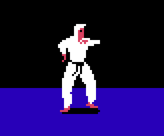

I Lloyds labyrint måste man undvika strålar av
Första uppgiften avklarad...men nu blir det svårare!
En ninjas kaststjärna heter egentligen på japanska
Intressant, kanske en värdig ninja som antagit operationen i år...
Världens snabbaste orm har samma färg som Cole... Den heter:
KALAS!!!
